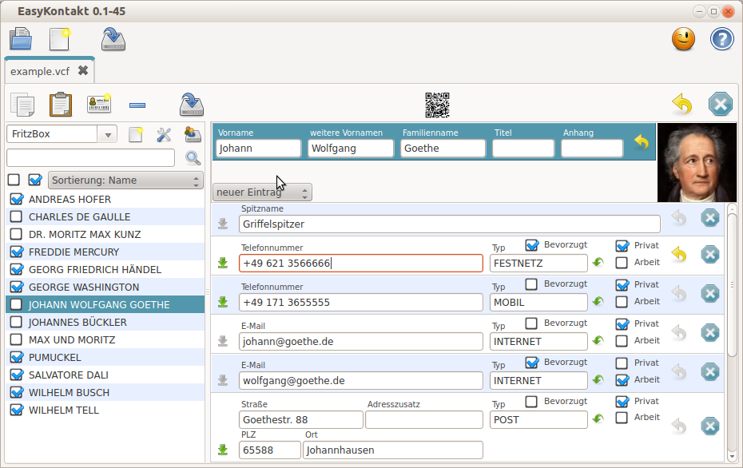
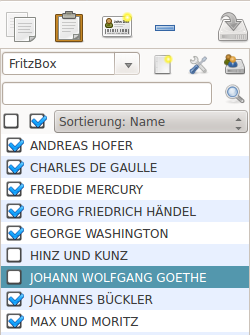
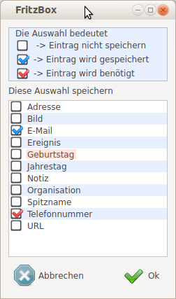

Features
Klarstellung: Die Kontaktdaten werden nicht direkt aus den Geräten/Programmen ausgelesen, sondern eine vom Gerät/Programm erstellte und auf den PC kopierte Kontaktdatendatei kann in EasyKontakt importiert werden.
EasyKontakt:
- speichert die Kontaktdaten im weit verbreiteten VCard - Format
- Importiert Kontaktdaten
- von Smartphones wie z.B. Android ( .vcf in der Version 2.1)
- von der Fritz.Box (.xml)
- von Thunderbird (Komma getrennte Liste .csv)
- Exportiert Kontaktdaten
- als VCard Datei zu Smartphones
- als einzelner Kontakt über ein QR-Code Image direkt ins Smartphone
- als VCard Datei zu Thunderbird
- als Fritz.Box XML Datei
- Öffnet mehrere Kontaktdaten Dateien gleichzeitig und ermöglicht so den einfachen Datenaustausch zw. den Dateien
- Datenaustausch zu anderen Programmen über die Zwischenablage im VCard Format
- Undo: Änderungen verwerfen
- für Einträge
- für Kontakte
- oder für die ganze Kontaktliste
- selektive Auswahl der zu exportierenden Daten
- für unterschiedliche Ziele oder Benutzer
- Wahlweise Abhängigkeit von Datenverfügbarkeit
- z.B. Nur Datensätze die eine Telefonnumer enthalten sollen für das Smartphone exportiert werden
- z.B. Nur Datensätze die eine E-Mail adresse enthalten sollen für Thunderbird exportiert werden
- auf Wunsch mit reduziertem Dateninhalt
- Entsprechend der VCard Spezifikation gibt es für jeden Kontakt Bearbeitungsmodule für:
- den Vollständigen Namen
- Fotos oder Icons
- Telefonnummern (beliebige Anzahl)
- E-Mail Adressen (beliebige Anzahl)
- Post Adressen (beliebige Anzahl)
- Datumseinträge / Termine
- Notizen
- Weitere Bearbeitungsmodule können per Konfigurationsdatei hinzugefügt werden
- VCard Eigenschaften die noch nicht von einem EasyKontakt Bearbeitungsmodul unterstützt werden gehen nicht verloren.
Screenshot
{kind=link}
Beschreibung
Die Kontaktdaten von Smartphones (zumindest bei Android Geräten) können im vCard Format exportiert und importiert werden. EasyKontakt nutzt genau dieses Format um Kontaktdaten wie Telefonnummern, E-Mail Adressen und Postadressen zu verwalten. Über Importmodule kann EasyKontakt zusätzlich auch die Adress/Telefonbücher vom E-Mail Programm Thunderbird, von einer Fritz.Box und vielen anderen Quellen importieren. Import bedeutet hier aber nicht, dass die Daten automatisch in eine bereits bestehendes Adressbuch integriert werden, EasyKontakt erstellt einfach ein neues Adressbuch im vCard Format (übliche Dateiendung ist .vcf) und öffnet es in einem neuen Register (Tab).Weil in EasyKontakt mehrere Adressbücher gleichzeitig geöffnet werden können, lassen sich auch die Kontaktdaten über die Zwischenablage leicht zwischen den Adressbüchern austauschen. So kann schnell aus den verschiedenen Quellen ein einziges zentrales Adressbuch entstehen.
Aus diesem zentralen Adressbuch können dann die verschiedenen Zielgeräte mit den aktuellen Kontaktdaten versorgt werden. Es stellt sich aber jetzt die Frage: Benötige ich wirklich alle Daten des Adressbuches auf jedem Zielgerät oder Programm? Wir benötigen also eine für jedes Zielgerät oder Zielprogramm zugeschnittene Selektionmöglichkeit.
Kontaktauswahl
{kind=link}
Wenn mehrere Personen das Adressbuch als gemeinsame Basis benutzen enthält es mit Sicherheit auch Kontakteinträge die nicht jeder benötigt. Deshalb kann mit EasyKontakt für veschiedene Ziele oder Benutzer eine selektive Auswahl der Kontakte vorgenommen werden.
So kann Beispielsweise für das Smartphone von Max eine andere Auswahl getroffen werden wie für das Smartphone von Moritz.
Die Kontaktauswahl ist nur dann aktiv, wenn eine benutzerdefinierte Liste ausgewählt ist.
Im Bild dargestellt, ist FritzBox als benutzerdefinierte Liste gewählt.
Im Bild dargestellt, ist FritzBox als benutzerdefinierte Liste gewählt.
Datenauswahl
{kind=link}
Adressdaten in einer Fritz.Box zu speichern macht nicht wirklich Sinn und ob Telefonnummern im Adressbuch des E-Mail Programms sinnvoll sind soll jeder selbst für sich entscheiden. Mit EasyKontakt lässt sich der Dateninhalt für verschiedene Ziele unterschiedlich auswählen.
- Eine Auswahlbox in der Liste kann 3 Zustände annehmen
- leer - Diese Einträge werden nicht im Ziel gespeichert.
- ausgewählt - Fehlt dieser Eintrag im Kontaktdatensatz wird der ganze Datensatz nicht im Ziel gespeichert.
- markiert - Diese Einträge werden im Ziel gespeichert.
Das im Bild gezeigte Beispiel bedeutet:
Von diesem Kontaktdatensatz werden nur die Einträge für E-Mail und Telefonnummer in der Zieldatei gespeichert, aber nur dann, wenn im Datensatz eine Telefonnummer enthalten ist.
Bei einigen Linuxdistributionen ist der 3.Zustand markiert nicht eindeutig erkennbar. Mit EasyKontakt.css lässt sich dieser Mangel zumindest für des Programm selbst beheben.
Datei: $HOMEDIR/EasyApps/EasyKontakt/EasyKontakt.css
QCheckBox::indicator:checked {
image: url(:/img/img/checkbox-checked.png);
}
QCheckBox::indicator:unchecked {
image: url(:/img/img/checkbox-unchecked.png);
}
QCheckBox::indicator:indeterminate {
image: url(:/img/img/checkbox-partiallychecked.png);
}
Datumsformat
In der Spezifikation des VCard Formates RFC 6350 ist das zu verwendende Datumsformat eindeutig definiert mit- yyyyMMdd
- yyyy ist die 4-stellige Jahreszahl
- MM ist der 2-stellige Monat ( also notfalls mit einer führenden "0")
- dd ist der 2-stellige Tag des Monates ( notfalls auch wieder mit einer führenden "0")
Leider hält sich nicht jede Software an genau diese Definition und wenn EasyKontakt die Kontaktdaten mit solchen Programmen gemeinsam benutzen soll, lässt sich diese Vorgabe seit EasyKontakt 0.1-50 in der Konfigurationsdatei EasyKontakt.conf ändern.
VCARD-DATEFORMAT=yyyyMMdd;yyyy-MM-dd
Die durch Strichpunkt ";" getrennte Liste gibt die Möglichen Formate für das einzulesende Datumsformat an. Gespeichert wird das Datum dann im Format des ersten Eintrages in der Liste.
Achtung: nur bei Änderungen wird das Datum neu geschrieben
Achtung: bitte exakt die Groß/Kleinschreibung beachten! MM für Monat mit Großbuchstaben, der Rest alles klein.
Achtung: bitte exakt die Groß/Kleinschreibung beachten! MM für Monat mit Großbuchstaben, der Rest alles klein.
Konfiguration
Zur Bearbeitung der einzelnen vCard Einträge stehen verschiedene Editoren zur Verfügung(in der Konfigurationsdatei ObjektTyp genannt). In der Konfigurationsdatei VCardItems.conf sind die verfügbaren Editoren definiert und können auch noch weitere hinzugefügt werden.VCardItems.conf is zu finden in:
- Windows
- im Ordner help\VCardItems.conf des EasyKontakt-Programmordners.
- Linux
- in /usr/share/EasyKontakt/VCardItems.conf
// Beginn Kommentar // [KEY] Schlüsselname wie von VCard definiert // Item=Schlüsselname;Übersetzung;Neu;ObjektTyp;Exclusive // Schlüsselname - exakt gleich wie [KEY] // Übersetzung - des Schlüsselnamen // Neu - Vorbelegung eines neuen Eintrages // ObjektTyp - 0=Name; 1=Einzeiler; 2=Adresse; 3=Bild; 4=Datum/Zeit; 5=Notizen // exclusive - wenn nur ein gültiger Eintrag möglich sein soll !kleinbuchstaben verwenden // OptionList=Eigenschaften zum Schlüssel wie von VCard definiert // Translation=Übersetzung der Eigenschaften // ExtraParameter=Anzahl der Zusatzparameter für Einzeiler (ObjektTyp 1) // End Kommentar [N] // Hier werden keine Parameter benötigt [PHOTO] Item=PHOTO;Bild;;3;exclusive OptionList= Translation= ExtraParameter= [TEL] Item=TEL;Telefonnummer;+49 ;1; OptionList=USER DEFINED;VOICE;CELL;FAX;;VIDEO;PAGER;TEXT;TEXTPHONE Translation=BENUTZERDEFINIERT;FESTNETZ;MOBIL;FAX;VIDEO;PAGER;TEXT;TEXTPHONE ExtraParameter=2 [EMAIL] Item=EMAIL;E-Mail;;1; OptionList=USER DEFINED;INTERNET;X400 Translation=BENUTZERDEFINIERT;INTERNET;X400 ExtraParameter=0 [ADR] Item=ADR;Adresse;;2; OptionList=USER DEFINED;DOM;INTL;POSTAL;PARCEL Translation=BENUTZERDEFINIERT;LOKAL;INTERNATIONAL;POST;PAKET ExtraParameter=0Um dieser konfigurationsdatei eine Definition für z.B. den Geburtstag hinzuzufügen gehen wir so vor:
- [BDAY]
- der VCard Schlüssel für den Geburtstag
- Item=BDAY;Geburtstag;$DATE;4
- $DATE $TIME $DATETIME definiert die Art der Zeitangabe
- ObjektTyp 4 für Zeit/Datum
- OptionList=:
- Für den Geburtstag benötigen wir keine Eigenschaften
- Translation=
- somit auch keine Übersetzung
- ExtraParameter=0
[BDAY] Item=BDAY;Geburtstag;$DATE;4 OptionList=: Translation= ExtraParameter=0
nach dieser Vorgehensweise lassen sich auch Einträge konfigurieren, die nicht durch die vCard Spezifikation definiert sind. Die Nutzung dieser Einträge bleibt dann aber auf das Programm EasyKontakt beschränkt.
StyleSheet
Das Design von EasyKontakt kann durch ein StyleSheet angepasst werden. Dieses StyleSheet orientiert sich an dem CSS Standard der für die Webseiten Erstellung benutzt wird. Dazu wird diese Datei verwendet:- Windows
- [EasyKontakt-Programmordner]\EasyKontakt.css
- Linux
- [HOME]/EasyApps/EasyKontakt/EasyKontakt.css
Wird die ganze Datei oder der Inhalt der Datei komplett gelöscht, erstellt EasyKontakt eine neue StyleSheet Datei.
Changelog
- EasyKontakt 0.2-3
- Export nach FritzBox: Speichern als "Fritz.exchange Format" vertauscht Vornamen mit Nachnamen da die Fritzbox nicht umsortieren kann.
- Vertauschen von Vornamen und Nachnamen - im geöffneten Kontakt oder in der ganzen Liste.
- Weitere Kontaktdaten in bestehende Liste einfügen/Einlesen von mehreren VCF Dateien auf einmal.
- Fehlenden Button zum Export hinzugefügt.
- Bugfix: "Sonderzeichen in den Namen wie z.B. "<>& können jetzt verwendet werden.
- EasyKontakt 0.1-54
- Bugfix: ENCODING=QUOTED-PRINTABLE -> Mehrzeilige Einträge sind jetzt möglich
- Anzeige undefinierter Eigenschaften über "Fallback" Modul
- Android-Custom Eigenschaften sind in VCardItems.conf definierbar
- EasyKontakt 0.1-50
- Bugfix: Fehlende Zeichensatzangabe "CHARSET=" bei kodiertem Text "ENCODING=" in der VCF - Kontaktdatei führte zum Programmabsturz.
- Optionale Änderung des Datumsformates
- EasyKontakt 0.1-48
- Export zu .xml (FritzBox): Tags <undefined> aus XML entfernt -> Datei wird kleiner und übersichtlicher
- Export zu .xml (FritzBox): Änderung der Namen von "Nachname, Vorname" nach "Vorname Nachname"
- EasyKontakt 0.1-46
- Undo: Aktuelle Änderungen rückgängig machen
- EasyKontakt 0.1-42
- Speichern einer selektiven Kontaktliste nach Benutzerauswahl